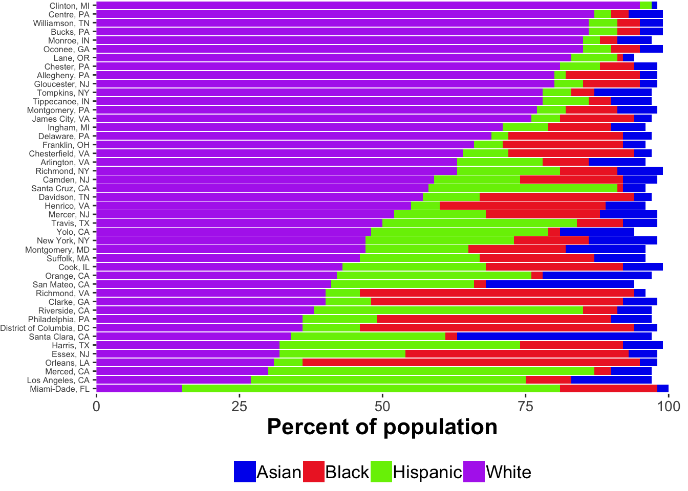
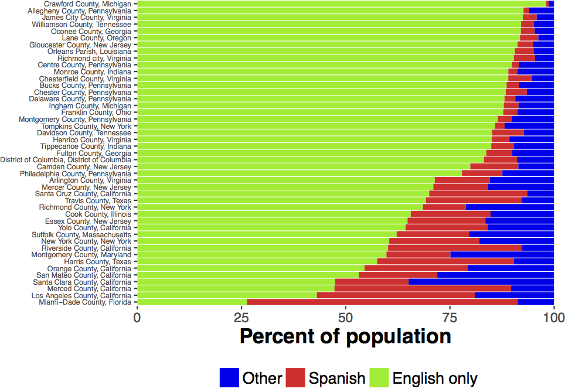

An overview of the PLAY data
To answer questions about infant behaviours in their natural environments, the PLAY project will collect, code, and share 900 hours of video collected in the homes of children at 12, 18, and 24 months of age drawn from 30 sites across North America.
Materials (videos, questionnaires, links to Databrary volumes) for the PLAY project are included in this site, where we document data collection protocols, workflows, coding strategies, and operational definitions.
Below is the project-wide workflow. The PLAY team will provide training, quality assurance, transcription, reliability coding, and collating data for the final PLAY database. The collaborating sites will perform data collection and various levels of data coding.


Participants overview
The collaborating sites in PLAY perform a variety of roles (see people for details). Each site that performs a collecting role is pre-assigned to complete all of the collecting functions (see in blue below). This page contains detailed help for the recruitment of participants. Click here for information about the data collection and data upload processes.
PLAY aims to set new standards for conducting open, transparent, and reproducible behavioral science by i) publishing the protocol, and ii) making extensive use of video exemplars to demonstrate phenomena and illustrate behavioral codes. For confidentiality reasons, access to video exemplars is restricted to researchers with authorized access to Databrary. To register for access, visit http://databrary.org/register.
Please ensure that you are currently logged in at Databrary to view embedded video examples in this webpage and gain access to phone and home questionnaires.
Participant Sampling
PLAY will produce a widely varied and rich set of data, most of which will be openly shared with the research community at the end of the five-year NIH grant period in late 2023. Infants’ natural play in the home is characterized by tremendous variability including variations in: geographic location, climate, SES, maternal/paternal employment, childcare experiences, infants’ and mothers’ ages, language environment, physical layout and characteristics of the home, availability of media, toys for play, and so on. Researchers will be able to explore the effects of any/all such factors.
Inclusion/Exclusion Criteria
Although PLAY endeavours to sample as much of the rich variations that the collection sites present, based on conversations with the launch group and to ensure a sufficient sample size, we will limit variability along several dimensions. To be included in the PLAY sample of 900 sessions, participants must:
- be 12, 18, or 24 months of age (+/- 1 week)
- be a single child (i.e., no living siblings)
- come from English or Spanish monolingual or bilingual homes (i.e., no other language exposure in the home)
- be born full-term (37-43 weeks) without known disabilities
- come from two-parent or single-parent households
Additionally, the mother must act as the caregiver during the one-hour natural interaction, which will be scheduled at a time when only the mother and infant are present.
Collection sites
Data will come from 30 geographically diverse sites across the US representing rural, suburban, and urban communities with different races, ethnicities, and socio-economic status, including English- and Spanish-speaking households.
The aim is to collect data that approximate county-level demographic characteristics as reflected in U.S. Census data.
Map

Racial composition

Socio-economic status

Education

Languages spoken

Video
All data collections will be recorded on video. Parents will be asked for their permission to share the video recordings and other data with the research community. When that permission is granted the videos and related data will be shared with the research community via Databrary:
- Adolph, K., Tamis-LeMonda, C., Gilmore, R.O. & Soska, K. (2016). PLAY Project: NICHD Workshop (2016-12-16). Databrary. Retrieved August 23, 2018 from http://doi.org/10.17910/B7.254.
- Adolph, K., Tamis-LeMonda, C. & Gilmore, R.O. (2017). PLAY Project: Pilot Data Collections. Databrary. Retrieved August 23, 2018 from https://nyu.databrary.org/volume/444.
- Adolph, K., Tamis-LeMonda, C., Gilmore, R.O. & Soska, K. (2018). Play & Learning Across a Year (PLAY) Project Summit (2018-06-29 Philadelphia). Databrary. Retrieved August 23, 2018 from http://doi.org/10.17910/B7.724
Parent-report (questionnaire) data
PLAY researchers will collect and share a substantial corpus of parent-report (questionnaire) data.
The full set of self-report questions can be found here. A database/code book of the questionnaire items useful for item-level queries can be found in a Googlesheet here. The googlesheets R package makes it easy to interact with data in this format. We expect to migrate to successors to this package.
Except where otherwise noted, content on this site is licensed under a Creative Commons Attribution 4.0 International (CC BY 4.0) license.